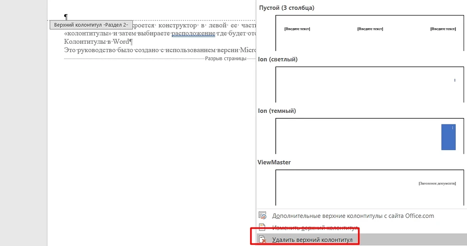

Колонтитулы
Колонтитул – это часть документа, которая отображается сверху и внизу листа и содержит справочную информацию. В этой области может указываться номер страницы, название главы, информация об авторе или документе.
По умолчанию в текстовом редакторе Word колонтитулы одинаковые на всех страницах, что не подходит для создания сложных документов. В этой статье мы расскажем о том, как сделать разные колонтитулы для каждой страницы в Word.
Создание колонтитулов на всех листах
Пошаговая инструкция выглядит следующим образом:
- Переходим к меню «Вставка» и находим расположенное в правой части меню колонтитулов.
- Меню позволяет поставить верхний колонтитул в Ворде, нижний или сразу с номером страницы. Указываем подходящий вариант и кликаем по нему.
- При необходимости выбираем изменение соответствующего колонтитула.
- Если выполняется пункт 3 инструкции, указываем параметры области с помощью расположенных на отдельной вкладке команд и иконок. В том числе, ширину верхней и нижней части, формат текста и его расположение внутри области.
- Вместо пункта 3 можно выбрать уже готовый шаблон. Например, такой, который делит колонтитул на несколько колонок с помощью табуляции. Параметры готового шаблона тоже можно изменить в процессе его создания или позже.
После завершения редактирования характеристик области следует нажать на кнопку с крестом на красном фоне, закрывающую окно колонтитулов. Тогда область для текста, номеров страниц и другой информации окажется на каждом листе документа. Данные в ней будут одинаковыми — и при редактировании все параметры, от ширины до текста, изменятся для всех страниц.
Колонтитул для первого листа
Иногда пользователям нужно сделать отдельную область для ввода данных на первой странице. Или даже полностью ее убрать, если лист будет титульным. Инструкция, как добавить колонтитул в Ворде только на первую страницу, немного меняется и требует выполнения следующих действий:
- Переходим к вкладке «Вставка» .
- Выбираем нужный колонтитул.
- Указываем необходимость изменения соответствующего колонтитула.
- При редактировании ставим галочку напротив надписи об особом колонтитуле для первой страницы. Здесь же можно отделить области для четных и нечетных страниц, но этим пунктом пользуются нечасто — например, при расстановке номеров страниц для книг.
Теперь у первого листа будет свой отдельный колонтитул и особые параметры для него. Область и ее параметры не будут повторяться на следующих листах. А, если не заполнить колонтитул текстом, на первой странице такого отступа не будет.
Установка отдельных колонтитулов для каждой страницы
Если вам необходимо установить на разных страницах колонтитулы, которые тоже будут отличаться друг от друга, то автоматическая настройка, как для первого листа, окажется невозможна. Документ придется вручную разбить на несколько разделов. Это работает не только для создания колонтитулов, но и чтобы сделать колонки в Ворде на отдельных листах.
Инструкция для создания отдельных колонок выглядит так:
- Включаем отображение скрытых символов, нажимая соответствующий значок. Это позволит определять места разрывов, чтобы было проще редактировать каждый раздел.
- Ставим номера страниц, если это требуется для документа. Для этого в меню вставки выбираем соответствующий пункт.
- В конце каждой страницы, которая заканчивает раздел, вставляем разрыв. Для этого устанавливаем курсор в нужном месте. Затем на вкладке «Макет» выбираем соответствующие пункты. Разрыв должен быть для «следующей страницы».
- Убеждаемся, что в конце появилась надпись, подтверждающая создание разрыва.
Теперь можно редактировать разделы, которые автоматически будут одинаковыми. Изменять их придется вручную, дважды кликнув по области и на вкладке колонтитулов сделав неактивной надпись «Как в предыдущем разделе». После этого изменения будут повторяться только в пределах одного раздела, не влияя на остальные.
Редактирование колонтитулов
Чтобы изменить колонтитул уже после его создания, придется выполнить такие действия:
- Выбираем нужную область и дважды кликаем по ней.
- Вносим изменения, набирая, вставляя или вырезая текст, настраивая ширину, добавляя изображения или блоки.
- Нажимаем на крест, закрывающий окно колонтитулов.
Обеспечить нумерацию страниц можно, добавляя при вставке пункт расстановки номеров. Но есть возможность сначала добавить нижний колонтитул или верхнюю область, а уже потом пронумеровать листы. При нумерации можно выбрать место расположения цифр, в том числе, на полях страницы.
Удаление колонтитулов
Для удаления колонтитульной области в Ворде можно кликнуть по ней, выделить все содержимое (Ctrl + A) и нажать Delete или Backspace. Колонтитул без данных автоматически удалится. Причем для всего раздела, в котором он был установлен.
Те же действия можно выполнить, перейдя на вкладку «Вставка», выбрав соответствующий колонтитул (верхний или нижний). Затем указать, что область нужно удалить. Поле автоматически исчезнет для всего раздела или документа, если он не был разделен.
Работа с колонтитулами в старых версиях Word
Принцип вставки колонтитула в Word 2003 и редактирования параметров области напоминает такие же действия для новых версий. Отличия — в том, что у старых офисных программ отсутствует продвинутый графический интерфейс. Потому перед тем, как добавить верхний колонтитул, следует перейти к меню «Вид» и открыть раздел для вставки колонтитульных областей.
По нажатию открывается подвижная панель, позволяющая выбрать шаблон, вставить автотекст и перемещаться между колонтитулами. После редактирования достаточно переместить курсор в любое место документа, кроме колонтитульной области. Но если она осталась незаполненной, колонтитул создан не будет.
При необходимости установки отдельной колонтитульной области на первой странице следует нажать на подвижной панели кнопку «Свойства страницы» и перейти к разделу «Источник бумаги». Здесь можно выбрать соответствующий пункт, а также настроить ширину области.
Для установки отдельных колонтитульных областей для каждой страницы, не считая первую, выполняют те же действия, как в Word 2007, 2009 и более поздних версиях. Для этого придется создать нужное количество разделов и настроить колонтитулы для каждого.
Для удаления области следует перейти к ней двойным кликом, выделить и полностью удалить все содержимое, как описано выше.